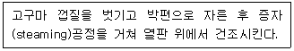
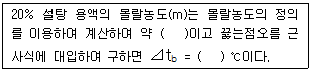
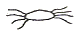

식품기사 (2008-05-11 기출문제)
1과목: 식품위생학
1. 농약에 의한 식품오염에 대한 설명으로 틀린 것은?
- 유기인제 농약은 대부분 극독약이므로 급성중독에 의한 사고가 많다.
- 농작물에 살포된 농약은 비, 바람, 햇빛 등의 외적작용과 작물의 성장, 대사 등의 내적작용에 의하여 분해될 수 있다.
- 유기염소제 중 DDT는 현재 사용이 금지되었다.
- 유기수은제 농약은 살충제로 많이 사용되며, 축적성이 거의 없다.
(정답률: 76%)

2. 식품제조가공업소에서 이물관리 개선을 위해 실시할 수 있는 대책과 거리가 먼 것은?
- X-ray 검출기 설치
- 방충·방서설비 등 제조시설 개선
- 대장균 등의 미생물 완전 멸균처리
- 반가공 원료식품의 자가품질검사 강화
(정답률: 74%)
3. 미생물 검사를 요하는 검체의 채취 방법에 대한 설명으로 틀린 것은?
- 채취 당시의 상태를 유지할 수 있도록 밀폐되는 용기·포장 등을 사용하여야 한다.
- 무균적으로 채취하더라도 검체를 소분하여서는 안된다.
- 부득이한 경우를 제외하고는 정상적인 방법으로 보관·유통 중에 있는 것을 채취하여야 한다.
- 검체는 완전 포장된 것에서 채취하여야 한다.
(정답률: 76%)
4. HACCP관리에서 미생물학적 위해분석을 수행할 경우 평가사항과 거리가 먼 것은?
- 위해의 중요도 평가
- 위해의 위험도 평가
- 위해의 원인분석 및 확정
- 위해의 발생 후 사후조치 평가
(정답률: 73%)
5. 식품공전상의 방법으로 대장균군 최확수(MPN)표를 작성하려고 한다. 시료를 10배수씩 3단계 희석한 검체를 조제하여 실험할 때 각 단계의 시험관 수는?
- 1개 또는 2개
- 3개 또는 5개
- 7개 또는 9개
- 10개 또는 20개
(정답률: 79%)
6. 식품의 부패검사법 중 화학적 검사법이 아닌 것은?
- 휘발성 아민 측정
- 산도 측정
- 단백질 침전 반응
- 경도 측정
(정답률: 83%)
7. 국제수역사무국에서 지정한 광우병의 특정위해물질(SRM, specified risk material)이 아닌 것은?(문제 복원 오류로 4번 내용이 정확하지 않습니다. 정확한 보기 내용을 아시는분 께서는 오류 신고를 통하여 내용 작성 부탁 드립니다. 정답은 1번 입니다.)
- 우유 및 유제품
- 뇌 및 눈을 포함한 두개골
- 척수를 포함한 척추
- 복원중
(정답률: 52%)
8. 살균·소독에 대한 설명으로 옳은 것은?
- 열탕 또는 증기소독 후 살균된 용기를 충분히 건조해야 그 효과가 유지된다.
- 우유의 저온살균은 대장균만을 완전살균한다.
- 자외선 살균은 대부분의 물질을 투과하므로 모든 물질에 매우 효과적이다.
- 방사선은 발아억제효과만 있고 살균효과는 없다.
(정답률: 63%)
9. 병에 걸린 동물의 고기를 섭취하거나 동물을 가공할 때 사람에게도 감염될 수 있는 전염병은?
- 디프테리아
- 급성회백수염
- 유행성 간염
- 부르셀라병
(정답률: 61%)
10. 보존료의 목적은?
- 미생물에 의한 부패를 방지
- 미생물의 완전 사멸
- 식품 성분의 개선
- 맛의 증진
(정답률: 86%)
11. 식품용 기구, 용기 또는 포장과 위생상 문제가 되는 성분과의 관계를 나타낸 것으로 틀린 것은?
- 종이제품 - 형광염료
- 범랑피복제품 - 납
- 페놀수지제품 - 페놀
- PVC(염화비닐수지)제품 - 포르말린
(정답률: 75%)
12. 비교적 소량의 검체를 장기간 계속 투여하여 그 영향을 검사하는 시험으로, 식품첨가물의 독성을 평가하는데 사용되는 것은?
- 급성독성시험
- 아급성독성시험
- 만성독성시험
- 최기형성시험
(정답률: 84%)
13. 방사선 조사(照射)식품과 관련된 설명으로 틀린 것은?
- 방사선 조사량은 Gyfh 표시하며, 1Gy = 1J/kg이다.
- 사용 방사선의 선원 및 선종은 Co-60의 감마선이다.
- 식품의 발아억제, 숙도조절 등의 효과가 있다.
- 조사식품을 원료로 사용한 경우는 제조·가공한 후 다시 조사하여야 한다.
(정답률: 86%)
14. 구운 육류의 가열·분해에 의해 생성되기도 하고, 마이야르(Maillard) 반응에 의해서도 생성되는 유독성분은?
- 휘발성아민류(volatile amines)
- 이환방향족아민류(heterocylic amines)
- 아질산염(N-nitrosoamine)
- 메틸알코올(methyl alcohol)
(정답률: 79%)
15. 식품첨가물 공전 총칙에서 정한 표시방법상 “수산화나트륨(1→5)"의 의미는?
- 수산화나트륨 1g을 알코올에 녹여 5mL로 한 것
- 알코올 1g에 수산화나트륨용액 5mL를 첨가한 것
- 수산화나트륨 1g을 물에 녹여 5mL로 한 것
- 물 1g에 수산화나트륨용액 5mL를 첨가한 것
(정답률: 68%)
16. Aflatoxin에 대한 설명으로 틀린 것은?
- Aspergillus 속에 의해 생성된 대사산물이다.
- 급성간장장애를 일으키는 독소이다.
- 사람에게 유독하나 동물은 감수성이 없다.
- Aflatoxin B1은 강한 독성과 발암성이 있다.
(정답률: 79%)
17. 독소형 세균성식중독 원인균만으로 짝지어진 것은?
- Salmonella thompson, Salmonella typhimurium
- Clostridium welchii, Clostridium botulinum
- Proteus morganii, Escherichia coli
- Staphylococcus aureus, Clostridium botulinum
(정답률: 63%)
18. 식품등의 표시기준 중 용어의 정의로 틀린 것은?
- 당류 : 식품 내에 존재하는 모든 단당류와 이당류의 합
- 트랜스지방 : 트랜스구조를 1개 이상 가지고 있는 비공액형 모든 불표화지방
- 유통기한 : 제품의 제조일로부터 소비자에게 판매가 허용되는 기한
- 영양강조표시 : 제품의 일정량에 함유된 영양소의 함량을 표시하는 것
(정답률: 43%)
19. 식품 내에 존재하는 유해물질에 대한 설명으로 옳은 것은?
- 콩에 존재하는 대표적인 화학적 유해물질은 단백질분해 효소 저해제인 트립신 저해제이다.
- 고시폴은 주로 채종유에 존재하며, 간과 신장에 독성을 나타낸다.
- 테트로도톡신은 고등어, 참치 등과 같은 등푸른 생선을 잘못 보관할 때 발생되며, 복통, 메스꺼움, 설사 등을 유발하는 독소이다.
- 벤조피렌은 복어의 생식기관과 간에 존재하는 독소에 의하여 발생하며 가열에 의해서 파괴되지 않는다.
(정답률: 75%)
20. 식품의 점도를 증가시키고 교질상의 미각을 향상시키는 고분자의 천연물질 또는 그 유도체인 식품첨가물이 아닌 것은?
- methyl cellulose
- carboxymethyl starch
- sodium alginate
- glycerin fatty acid ester
(정답률: 76%)
2과목: 식품화학
21. 물과의 친화력이 가장 큰 반응 그룹은?
- 수산화기(-OH)
- 알데히드기(-CHO)
- 메틸기(-CH3)
- 페닐기(-C6H5)
(정답률: 82%)
22. 심한 운동을 하면서 산소를 충분히 공급하지 못한 상태로 해당작용이 일어나면 생성되는 물질은?
- 젖산
- 글루콘산
- 구연산
- 인산
(정답률: 84%)
23. 콜레스테롤에 대한 설명으로 틀린 것은?
- 동물의 근육조직, 뇌, 신경조직에 널리 분포되어 있다.
- 과잉 섭취는 동맥경화를 유발시킨다.
- 비타민, 성호르몬 등의 전구체이다.
- 인지질과 함께 식물의 세포벽을 구성한다.
(정답률: 69%)
24. 청색값(blue value)이 8인 아밀로펙틴에 β-amylase를 반응시키면 청색값의 변화는?
- 낮아진다.
- 높아진다.
- 그대로 유지된다.
- 순간적으로 높아졌다가 시간이 지나면 다시 8로 돌아간다.
(정답률: 68%)
25. 유지의 경화공정과 트랜스지방에 대한 설명으로 틀린 것은?
- 경화란 지방의 이중결합에 수소를 첨가하여 유지를 고체화시키는 공정이다.
- 트랜스지방은 심혈관질환의 발병률을 증가시킨다.
- 식용유지류 제품은 트랜스지방이 100g당 5g 미만일 경우 “0”으로 표시할 수 있다.
- 경화된 유지는 비경화유지에 비해 산화안정성이 증가하게 된다.
(정답률: 75%)
26. 아래의 고구마 가공 공정에서 박편으로 자른 후 갈변현상이 나타났을 때 그 원인은?

- 부패에 의한 갈변
- 캐러멜화에 의한 갈변
- 효소에 의한 갈변
- 아스코르브산 산화반응에 의한 갈변
(정답률: 80%)
27. 쓴맛 성분과 그 쓴맛을 감소시킬 수 있는 효소의 연결이 옳은 것은?
- 루플론(lupulone) - 파파인(papain)
- 탄닌(tannin) - 레닌(renin)
- 나린진(naringin) - 나린진나아제(naringinase)
- 카페인(caffeein) - 셀룰라아제(cellulase)
(정답률: 78%)
28. 식육에 대한 설명으로 틀린 것은?
- 식육의 색은 주로 색소단백질인 myoglobin에 의한 것이다.
- 염지육은 소금과 질산염을 혼합하여 제조한다.
- 식육의 myoglobin함량은 동물의 나이에 따라 다르다.
- 같은 개체에서 얻어진 식육의 myoglobin함량은 동물의 부위에 관계없이 일정하다.
(정답률: 79%)
29. 식품의 물성에 대한 설명 중 틀린 것은?
- 젤리, 밀가루 반죽처럼 외부의 힘에 의해 변형된 물체가 외부의 힘이 제거되면 본 상태로 돌아가는 현상을 탄성(elasticity)이라 한다.
- 국수반죽과 같이 고체이면서 막대기 모양으로 늘어나는 성질을 경점성(consistency)이라 한다.
- 청국장, 납두 등에서와 같이 실처럼 물질이 따라오는 성징을 예사성(spinability)이라 한다.
- 과실 퓌레는 의가소성 유체(pseudoplatic fluid)이고, 설탕물, 물 등은 뉴톤 유체(Newtonian fluid)이다.
(정답률: 69%)
30. 유지의 산화속도에 영향을 미치는 인자에 대한 설명으로 틀린 것은?
- 이중결합의 수가 많은 들기름은 이중결합의 수가 상대적으로 적은 올리브유에 비해 산패의 속도가 빠르다.
- 수분활성도가 매우 낮은 상태(Aw 0.2 정도)로 분유를 보관하면 상대적으로 지방산화속도가 느려진다.
- 유탕처리 시 구리성분을 기름에 넣으면 유지의 산화속도가 빨라진다.
- 유지를 형광등 아래에 방치하면 산패가 촉진된다.
(정답률: 62%)
31. 결합수에 대한 설명으로 옳은 것은?
- 식품 중에 유리상태로 존재한다.
- 건조시에 쉽게 제거된다.
- 0℃ 이하에서 쉽게 얼지 않는다.
- 미생물의 발아 및 번식에 이용된다.
(정답률: 72%)
32. 각 식품별로 분산매와 분산상 간의 관계가 순서대로 옳게 연결된 것은?
- 마요네즈 : 액체 - 액체
- 우유 : 고체 -기체
- 캔디 : 액체 - 고체
- 버터 : 고체 - 고체
(정답률: 64%)
33. 식품의 회분분석에서 검체의 전처리가 필요없는 것은?
- 액상식품
- 당류
- 곡류
- 유지류
(정답률: 74%)
34. 관능검사법의 장소에 따른 분류 중 이동수레(mobile serving cart)를 활용하여 소비자 기호도 검사를 수행하는 방법은?
- 중심지역 검사
- 실험실 검사
- 가정사용 검사
- 직장사용 검사
(정답률: 82%)
35. 전분의 노화 방지책이 아닌 것은?(오류 신고가 접수된 문제입니다. 반드시 정답과 해설을 확인하시기 바랍니다.)
- 수분함량을 30~60% 사이로 조절한다.
- 식품을 유리전이온도 이상으로 유지하여 β-화 시킨다.
- 빙점 이하에서 수분함량을 15% 이하로 억제한다.
- 유화제를 사용한다.
(정답률: 34%)
36. 매운맛 성분이 아닌 것은?
- 캅사이신(capsaicin)
- 알칼로이드(alkaloid)
- 알리신(allicin)
- 진저롤(gingerol)
(정답률: 81%)
37. 우유단백질 간의 이황화결합을 촉진시키는데 관여하는 것은?
- 설프하이드릴(sulfhydryl)그룹
- 이미다졸(imidazole)그룹
- 페놀(phenol)그룹
- 알킬(alkyl)그룹
(정답률: 58%)
38. 당근에서 카로티노이드(cerotenoidis)를 분석하는 방법에 대한 설명으로 틀린 것은?
- 카로티노이드는 빛에 의해 쉽게 분해되므로 암소에서 실험을 진행한다.
- 당근 시료에서 카로디노이드를 분리하기 위해 수용액상에서 끓여 용출시킨다.
- 카로티노이드는 산소에 의해 쉽게 산화되므로 질소가스를 공급한다.
- 분리된 카로티노이드는 보통 역상 HPLC 또는 분광관도계를 활용하여 정량한다.
(정답률: 71%)
39. 유지의 중성지질에 붙어 있는 지방산을 가스크로마토그래피(GC)를 활용하여 분석할 때 유지의 처리 방법은?
- 중성지질을 헥산 용매에 희석한 후 바로 주사기를 이용하여 GC에 주입한다.
- 중성지질을 비누화하여 유리지방산을 제거한 후 GC에 주입한다.
- 중성지질에 직접 에틸기를 붙여 GC에 주입한다.
- 중성지질을 지방산메틸에스터로 유도체화시킨 후 GC에 주입한다.
(정답률: 73%)
40. 반죽을 통하여 밀가루의 점탄성을 향상시킬 수 있는 것은 분자내부에서 어떤 현상이 일어나기 때문인가?
- 분자 간 이황화 교환 반응
- 마이야르 반응
- 분자 내 에스테르 교환 반응
- 노화 현상
(정답률: 54%)
3과목: 식품가공학
41. 20wt % 설탕용액의 끓는점을 구하는 아래의 과정에서 ( ) 안에 알맞은 것을 순서대로 나열한 것은?(단, 설탕의 분자식은 C12H22O11, 용액의 끓는점오름 근사식 ⊿tb = 0.51m, m은 몰랄농도이다.)

- 0.01, 0.0⑤1
- 0.03, 0.0153
- 0.73, 0.3723
- 2.92, 1.4892
(정답률: 40%)
42. 지방의 산패를 측정하는 방법이 아닌 것은?
- Kreis test
- 과산화물가측정
- VBN 측정
- TBA test
(정답률: 48%)
43. z값이 8.5℃인 미생물을 순간적으로 138℃까지 가열시키고 이 온도를 5초 동안 유지한 후에 순간적으로 냉각시키는 공정으로 살균 열처리를 할 때, 이 살균공정의 F121값은?
- 125초
- 250초
- 375초
- 500초
(정답률: 43%)
44. 차단성이 좋으며, 열수축성이 커서 햄, 소시지 등의 단위 포장에 주로 사용되는 포장 재료는?
- PP(polypropylene)
- PVC(polyvinyl chloride)
- PVDC(polyvinylidene chloride)
- OPP(priented polypropylene)
(정답률: 69%)
45. 최대빙결정생성대에 대한 설명으로 옳은 것은?
- 품온의 하강이 이루어지는 온도 범위이다.
- 냉각력의 대부분은 잠열을 제거하는데 사용되며, 통과하는 냉각속도에 따라 빙결정의 크기가 결정된다.
- 일반적으로 -5℃ ~ -10℃ 정도의 온도 범위이다.
- 급속동결과 최대빙결정생성대의 통과시간은 무관하다.
(정답률: 56%)
46. 두께 0.03mm인 폴리프로필렌필름으로 어묵을 포장하였다. 포장 밖의 산소분압은 0.21기압, 포장 내의 산소분압은 0.⑤기압일 때 단위면적당 산소투과량은? ( 단, 산소투과도는 1.7 x 10-3cm3·mm/s·m2·atm이다.)
- 약 0.0091cm3/s·m2
- 약 0.017cm3/s·m2
- 약 0.091cm3/s·m2
- 약 0.0017cm3/s·m2
(정답률: 27%)
47. 냉매로 사용하는 CHCIF2의 냉매기호는?
- R-11
- R-12
- R-22
- R-122
(정답률: 47%)
48. 플라스틱 필름으로 진공 포장한 식품에 대한 설명으로 틀린 것은?
- 포장 내부의 공기를 제거하여 내용물과 산소와의 접촉을 피한다.
- 진공 포장시 식품과 내부는 완전 진공 상태가 계속 유지된다.
- 산화적 변패를 어느 정도 방지할 수 있다.
- 호기성 미생물의 생육을 억제할 수 있다.
(정답률: 69%)
49. 유제품 가공시 적용되는 제조원리가 옳게 연결된 것은?
- 치즈 - 응유효소에 의한 응고
- 요구르트 - 알코올에 의한 응고
- 아이스크림 - 염류에 의한 응고
- 버터 - 가열에 의한 응고
(정답률: 72%)
50. 사후강직 전의 근육을 동결시킨 뒤 저장하였다가 짧은 시간에 해동시킬 때 많은 양의 drip을 발생시키며 강하게 수축되는 현상은?
- 자기분해
- 해동강직
- 숙성
- 자동산화
(정답률: 92%)
51. 냉동 french - fried potato를 만들 때 품질에 영향을 주는 요인에 대한 설명으로 틀린 것은?
- 고형분 함량이 높은 감자를 사용하면 바삭함, 향미 등의 전체적인 품질이 우수하다.
- 고형분 함량이 높은 감자원료는 수율을 감소시킨다.
- 감자의 환원당 함량이 높으면 튀김기 갈변에 큰 영향을 준다.
- 감자는 13℃ 정도에서 저장하면 싹이 나서 저장 중 감자의 중량 손실이 있다.
(정답률: 61%)
52. 식물유지 채유법에 대한 설명으로 틀린 것은?
- 압착법 공정 중 파쇄는 원료의 종류에 따라 압쇄하는 정도를 다르게 하는데, 이것은 착유율과 관계가 있다.
- 증기처리법에서 탱크에 압력을 가하여 가열처리하면 기름이 아래로 가라앉는다.
- 효소에 의한 유리지방산 생성을 방지하기 위해 유지종자를 건조시켜 수분함량을 조정한다.
- 추출용제로는 석유성분에서 증류하여 만드는 헥산이 있다.
(정답률: 52%)
53. 유지 채취시 전처리 방법이 아닌 것은?
- 정선
- 탈각
- 파쇄
- 추출
(정답률: 75%)
54. 다음 중 해조류에서 추출할 수 있는 다당류가 아닌 것은?
- 알긴산
- 카라기난
- 아라비아검
- 한천
(정답률: 60%)
55. 과즙의 청징, 착즙의 수율향상 및 과즙의 농축을 쉽게 하기 위하여 이용되는 효소는?
- peptide hydrolase
- pectinase
- catalase
- peroxidase
(정답률: 70%)
56. 연유제조시 예열과정에서 농축공정보다 더 높은 온도를 사용하는 목적이 아닌 것은?
- 원료유를 살균하기 위하여
- 설탕의 용해를 쉽고 안전하게 하기 위하여
- 농후화를 방지하기 위하여
- 영양손실을 방지하기 위하여
(정답률: 52%)
57. 유지제조 공정 중 원터링(wintering)의 주된 목적은?
- 유리 지방산 제거
- 탈색
- 왁스(Wax)분 제거
- 탈취
(정답률: 69%)
58. 식품의 유통기한 설정시 품질저하가 2차 반응속도로 나타날 때에 대한 설명으로 틀린 것은?
- 시간에 따른 품질지표물질의 변화는 직선적인(linear)역비례관계에 있다.
- 품질지표물질의 변화속도는 물질농도에 비례적으로 변한다.
- 식용유나 건조채소의 산패가 해당된다.
- 일반식품의 비타민 손실이 해당된다.
(정답률: 38%)
59. 수산 건제품의 처리 방법에 대한 설명으로 틀린 것은?
- 자건품 : 수산물을 그대로 또는 소금을 넣고 삶은 후 말린 것
- 배건품 : 수산물을 그대로 또는 간단히 처리하여 말린 것
- 염건품 : 수산물에 소금을 넣고 말린 것
- 동건품 : 수산물을 동결·융해하여 말린 것
(정답률: 68%)
60. 다음 건조 장치 중 액체 식품을 건조하는데 가장 적합한 것은?
- 터널 건조기(tunnel drier)
- 유동층 건조기(fluidized-bed drier)
- 기류 건조기(flash drier)
- 분무 건조기(spray drier)
(정답률: 74%)
4과목: 식품미생물학
61. 당으로부터 에탄올 발효능이 강한 세균은?
- Vibrio 속
- Escherichia 속
- zymomonas 속
- Proteus 속
(정답률: 38%)
62. 세포 융합의 단계로 옳은 것은?
- 세포의 protoplast화 - protoplast의 융합 - 융합체의 재생 - 재조합체의 선택, 분리
- protoplast의 융합 - 세포의 protoplast화 - 융합체의 재생 - 재조합체의 선택, 분리
- 세포의 protoplast화 - 융합체의 재생 - protoplast의 융합 - 재조합체의 선택, 분리
- protoplast의 융합 - 융합체의 재생 - 세포의 protoplast화 - 재조합체의 선택, 분리
(정답률: 57%)
63. 다음 편모균 중 주모종은?

(정답률: 35%)
64. 하면발효효모에 해당되는 것은?
- Saccharomyces cerevisiae
- Saccharomyces carlsbergensis
- Saccharomyces sake
- Saccharomyces coreanus
(정답률: 80%)
65. 다음 세균 중 외막(outer membrane)을 갖고 있는 것은?
- Lactobacillus 속
- Staphylococcus 속
- Escherichia 속
- Corynebacterium 속
(정답률: 27%)
66. 재조합 DNA 기술 중 형질도입(transduction)이란?
- 세포를 원형질체(protoplast)로 만들어 DNA를 재조합시키는 방법
- 성선모(sex pili)를 통한 염색체의 이동에 의한 DNA 재조합
- 파아지(phage)의 중개에 의하여 유전형질이 전달되어 일어나는 DNA 재조합
- 공여세포로부터 유리된 DNA가 직접 수용세포 내에 들어가서 일어나는 DNA 재조합
(정답률: 57%)
67. haematometer의 1구역 내의 균수가 평균 5개일 때 mL 당균액의 균수는?
- 2 x 105
- 2 x 106
- 2 x 107
- 2 x 108
(정답률: 20%)
68. 곰팡이의 유성포자에 해당하지 않는 것은?
- 분생포자(condiospore)
- 접합포자(zygospore)
- 난포자(,oospore)
- 담자포자(basidiospore)
(정답률: 60%)
69. 기하급수적으로 번식 중인 미생물의 생장에 관한 관계식으로 옳은 것은? (단, t : 생장시간, g : 세대시간, x : t시간 후의 세균의 수)
- x = (g/t)2
- x = (t/g)2
- x = 2t/g
- x = 2g/t
(정답률: 54%)
70. 불완전균류에 대한 설명으로 옳은 것은?
- 유성생식시대가 불명(不明)한 균이다.
- 형태가 완전하지 못한 균류이다.
- 포자를 형성하지 않는 균들이다.
- 변이를 일으킨 균들이다.
(정답률: 77%)
71. 맥주표모 세포의 기본적인 형태는?
- 계란형(cerevisiae type)
- 타원형(ellipsoideus type)
- 소시지형(pastorianus type)
- 레몬형(apiculatus type)
(정답률: 73%)
72. 진핵세포에 대한 설명으로 옳은 것은?
- 소포체에서 리소좀이 형성된다.
- 진핵세포에는 막으로 둘러싸인 핵과 소기관이 존재한다.
- 진핵세포 리보솜의 크기는 10S이다.
- 핵 안에 있는 인에서는 DNA가 합성된다.
(정답률: 68%)
73. xylose를 이용하므로 아황산펄프폐액에서 배양할 수 있는 효모는?
- Candida lipolytica
- Candida albicans
- Candida utilis
- Candida versatilis
(정답률: 70%)
74. 고구마를 연부(軟腐)시키는 미생물은?
- Bacillus subtilis
- Aspergillus oryzae
- Saccharomyces cerevisiae
- Rhizopus nigericans
(정답률: 69%)
75. 곰팡이 균사에 격막(septum)이 없는 것은?
- Trichoderma 속
- Monascus 속
- penicillium 속
- Rhizopus 속
(정답률: 57%)
76. 다음 중 젖당 발효성 효모는?
- Saccaromyces cerevisiae
- Saccaromyces rouxii
- Kluyveromyes maexianus
- Candida utilis
(정답률: 29%)
77. 방선균의 성질 및 형태에 대한 설명으로 틀린 것은?
- 분생자를 형성하거나 포자낭 중에 포자를 형성한다.
- 세포벽의 화학구조가 그람 양성 세균과 유사하다
- 균사상으로 되어 있다.
- 세포는 진핵세포로 되어 있다.
(정답률: 57%)
78. 정상형(homofermentative) 젖산균이 아닌 것은?
- Lactobacillus acidophilus
- Lactobacillus casei
- Lactobacillus brevis
- Lactobacillus bulgaricus
(정답률: 39%)
79. 자율복제기능을 가지며, 유전자 재조합에서 목적 DNA 조각을 숙주세포의 DNA 내로 도입시키기 위하여 사용하는 매개체는?
- 프라이머(primer)
- 벡터(vector)
- 마커(marker)
- 중합효소(polymerase)
(정답률: 63%)
80. 빵의 로프(rope) 생성에 관여하는 미생물은?
- B. subtilis, B. lichenifoemis 등의 Bacillus 속
- C. putrificum, C. sporogenus 등의 Clostridium 속
- P. fluorescens, P. cerevisiae 등의 Pseudomonas 속
- S. rouxii, S. cerevisiae 등의 Saccharomyces 속
(정답률: 50%)
5과목: 생화학 및 발효학
81. 다음 중 vitamin B12의 생산균주가 아닌 것은?
- Ashbys gossypii
- Propionibacterium freudenrechii
- Streptomyces olivaceus
- Nocardia rugosa
(정답률: 53%)
82. 다음 중 self-replication이 가능한 것은?
- DNA
- t-RNA
- r-RNA
- m-RNA
(정답률: 56%)
83. 영양분이 세포 내로 전달될 때 특별한 막 단백질이 필요하지 않은 수송 방법은?
- group translocation
- active transport
- facilitated diffusion
- passive diffusion
(정답률: 56%)
84. EDTA(Ethylene Diamine Tetra Acetic Acid)처리에 의하여 효소가 불활성화되는 이유는?
- peptide 결합이 분해되기 때문이다.
- 단백질의 2차 구조가 변하기 때문이다.
- 단백질의 1차 구조가 변하기 때문이다.
- 활성부위의 금속이온과 결합하기 때문이다.
(정답률: 72%)
85. 다음 중 요소회로에서 ATP를 소비하는 반응은?
- arginie → ornithine + urea
- carbamoyl phosphate + ornithine → citrulline
- arginosuccinate → arginine + fumarate
- citrulline + aspartate → arginosuccinate
(정답률: 34%)
86. 주정 제조시 정류계수가 1보다 작은 경우 증류액의 품질은?
- 원액보다 불순물이 적다.
- 원액보다 불순물이 많다.
- 원액과 불순물의 양이 같다.
- 증류액에 불순물이 존재하지 않는다.
(정답률: 50%)
87. 보효소로서의 유리 nucleotide와 그 작용을 옳게 연결한 것은?
- ADP/ATP : 인산기 전달
- UDP-glucose : α-ketoglutarate 산화의 에너지 공급
- GDP/TP : phospholipid합성
- IDP/ITP : 산화-환원 반응시 산소의 공여체
(정답률: 61%)
88. 생체 내에서 산화·환원반응이 일어나는 곳은?
- mitochondria
- golgi apparatus
- cell wall
- nucleus
(정답률: 72%)
89. prostaglandin의 생합성에 이용되는 지방산은?
- stearic acid
- oleic acid
- arachidonic acid
- palmitic acid
(정답률: 60%)
90. RNA를 가수분해하는 효소는?
- ribonuclease
- polymerase
- deoxyribonuclease
- ribonucleotidyl transferase
(정답률: 59%)
91. 다음 중 효소 단백질의 이온적 특성에 의한 정제 방법이 아닌 것은?
- 등전점 침전
- 투석
- 염석
- 이온교환 크로마토그래피
(정답률: 45%)
92. 간에서 포도당이 글리코겐으로 변환되는 과정에 참여하는 물질은?
- uridine triphosphate
- cytidine triphosphate
- guanosine
- adenosine monophosphate
(정답률: 36%)
93. 액체배양법에 의한 효소생산에 대한 설명으로 틀린 것은?
- 액체배양법은 세균, 효모 배양에 적합하다.
- 고체배양법보다 일반적으로 역가가 높다.
- 기계화가 가능하다.
- 좁은 면적을 활용할 수 있다.
(정답률: 61%)
94. 다음 중 식용의 단세포단백질(SCP)로 이용할 수 없는 균주는?
- Saccharomyces cerevisiae
- Chlorella vulgaris
- Candida utilis
- Asperglillus flavus
(정답률: 58%)
95. 유기질의 혐기적 분해시 발생하는 최종산물은?
- NH3
- CH4
- H2S
- SO2
(정답률: 39%)
96. glutamic acid 발효시 penicillin을 첨가하는 주된 이유는?
- 잡균의 오염 방지를 위하여
- 원료당의 흡수를 증가시키기 위하여
- 당으로부터 glutamic acid 생합성 경로에 있는 효소반응을 촉진시키기 위하여
- 균체 내에 생합성된 glutamic acid를 균체 외로 투과하는 막투과성을 높이기 위하여
(정답률: 73%)
97. O2 분압이 높고, CO2 분압이 낮은 조건하에서 광호흡이 일어날 때, 그 기질이 되는 화합물은?
- glycolic acid
- glyoxylic acid
- 3-phosphoglyceric acid
- acetyl - co A
(정답률: 25%)
98. 재조합 DNA에 이용되는 cloning vector(plasmid)의 구비 조건으로 틀린 것은?
- 분자량이 크고 plasmid DNA의 검출이나 분리·정체가 용이할 것
- 제한효소에 의한 적당한 절단분위가 있을 것
- 재조합형 plasmid DNA를 세포에 도입했을 때 plasmid 보유균을 선택할 수 있는 유전 marker가 있을 것
- 절단부위에 이종 DNA를 삽입하여도 복제능력을 잃지 않을 것
(정답률: 50%)
99. 다음 중 발표방법과 미생물의 연결이 틀린 것은?
- lactate 발효 - Streptococcus lactis
- citrate 발효 - Asperglillus niger
- α-ketoglutarate 발효 - Pseudomonas fluorescence
- itaconate 발효 - Bacillus subtilis
(정답률: 57%)
100. 동위원소를 표지한 산소(18O)를 green algae의 광합성에 사용할 때에 대한 설명으로 틀린 것은?
- 물분자에 18O를 표지한 H218O는 산소분자(18O)에 나타난다.
- 탄산가스에 18O를 표지한 C18O2는 물분자에 나타난다.
- 탄산가스에 18O를 표지한 C18O2는 탄수화물에 나타난다.
- 물분자에 18O를 표지한 H218O는 탄수화물에 나타난다.
(정답률: 31%)